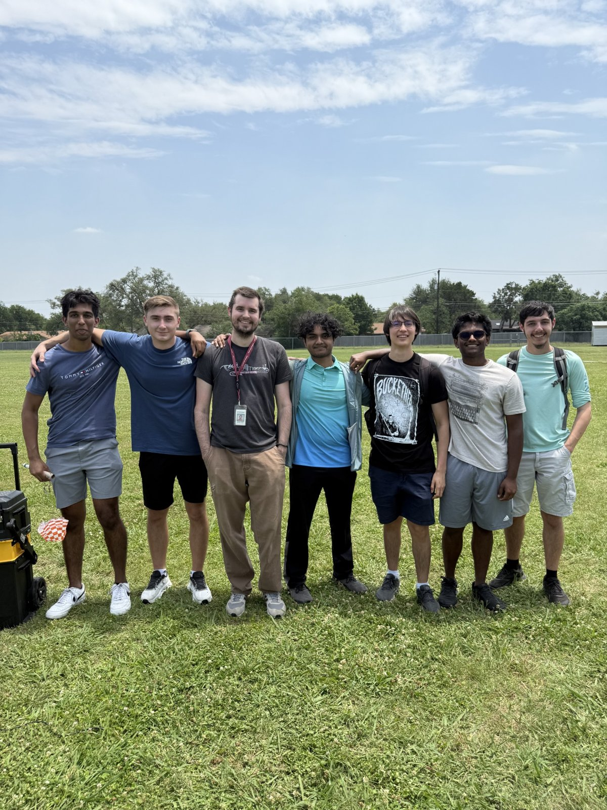

Cornell University / Class of 2030
Curiosity.
Circuits.
Creation.
I’m Rhithvik, a Cornell student intending to major in Electrical and Computer Engineering. I explore ideas through circuits, CAD, and hands-on building.
Electrical thinking. Practical making.
A selection of my work
Ideas in practice.

Aerospace · Research · CAD
NASA HAS & Moonshot ↗
Lunar spacesuit research and CAD, hands-on aerospace prototypes, and the design lessons I brought to Team Foxtrot 02.

Engineering Design & Development
Electric Bike Conversion Kit ↗
Led research, calculations, electrical diagrams, and cost optimization for a team conversion-kit project. Helped with wiring and CAD and reached out to an experienced local hobbyist.

Course projects · Multisim & hardware
PLTW Digital Electronics ↗
PLTW coursework in circuit design and digital logic, with original Multisim schematics, hardware demonstrations, and proficiency in breadboard construction and simulation.

Cornell · ENGRI 1100
Nitrogen Laser — Pulse Amplifier Group ↗
Built the pulse amplifier with a team of three for a collaborative nitrogen laser lab project, developing skills in soldering, circuit layout, and subsystem integration.

Rocketry · PLTW · Leadership
Rocket Science & Aerospace Engineering ↗
Model rockets, airfoil testing, balsa glider design, and simulated flight planning—connecting club leadership with hands-on aerospace coursework.
Experience & milestones
Fall 2026 · Class of 2030
Cornell University
I’m beginning my undergraduate studies with an intended major in Electrical and Computer Engineering. I hope to join a project team and get involved in research around chip design and fabrication. Through the nitrogen laser lab, I’ve already gained experience building a pulse amplifier and integrating it with a larger team project.
Academic2026
Graduated from Round Rock High School
Completed high school with a foundation in physics, mathematics, computer science, and engineering. My coursework included Digital Electronics, Engineering Design and Development, Aerospace Engineering, and Principles of Engineering.
MilestoneMay – June 2025
NASA Moonshot — Team Foxtrot 02
Contributed reduced-gravity research and CAD work to a team lunar spacesuit proposal. My work connected cooling, glove functionality, and wearable components with the challenges of exploration beyond Earth.
AerospaceOctober 2024 – April 2025
NASA High School Aerospace Scholars
Explored mission planning and spacecraft modeling through research, CAD concepts, and hands-on challenges. Engineering notebooks and prototype tests helped me practice documenting results and improving a design through iteration.
Research & designHigh school · Leadership
Future City — Modeling & Mentorship
Led 3D modeling for a sustainable ocean-city project whose team received People’s Choice and Best Essay awards. As a club co-founder and modeling mentor at Leap4ward, I also helped students develop CAD skills and explore sustainable engineering.
LeadershipHigh school · Engineering
From Circuit Simulations to Physical Prototypes
Built experience with Multisim, digital logic, and breadboards through PLTW Digital Electronics. Team projects in electric-bike conversion and reverse engineering gave me practice with research, calculations, wiring, testing, and technical presentations.
Hands-on engineering